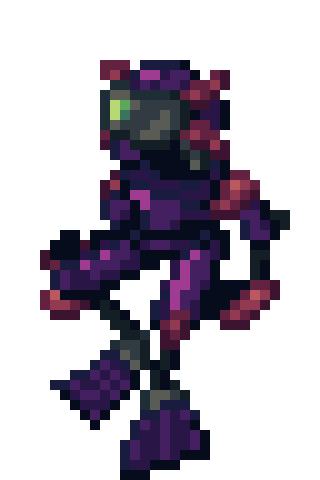
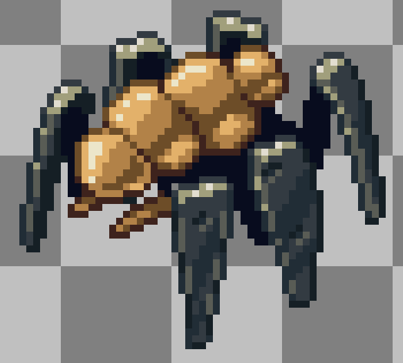

Hi, my name is Lucretia Greville(24408581) and I am a student going to UL. This blog is meant to act as my dev
diary for my group's project as part of our CS4043 game design module. The project so far is a 2D roguelike turn based
game that takes place in the ocean, I nominated myself as the as the sound designer as well as composer along
with Mykhailo who will also be composing the music. I'm somewhat familiar with GarageBand on IOS so I will likely end up using
that for the some of game's music and sound effects. Below are a few demo tracks I made to try and capture the feeling
the game is going for, to try and sound sombre, depressing and also fit the sci-fi marine setting. They're really
experimental as I'm still learning how to use GarageBand and nowhere good enough to be in the game but making them
has been great experience. The first demo may be used for the titlescreen, it has the feel of an old gameboy game
starting music to me.
The second demo is meant to be much more oppressive sounding than the first and may be used in a scene where we enter the
final zone of the game.
Hi, we've started to get a gist for what the vibe the game is going for is like which really helps when it comes to sound
design. We have a general sense for the plot that it takes place under the ocean in a cyberpunk future and the main
character is sent down into the ocean to defeat a previously created robot that gained a will of its own(The storywriter
Caoimhe could exaplain it much better). We've decide on using Godot as the game engine and our programming team has started
coding some of the elements in the game. Our artwork team has started making designs for the enenmies and main characters.
I've made a demo for music that may play during a possible upgrade portion of the game or where the player makes some choice
over elements of their character's abilities.
Then I was able to finalise the demo into a state where I'm happy enough to call it basically finished unless I go back
and refine it a bit more.
I've also made started making another possible title screen music unless we can find somewhere else it works better.
These are the opening notes of it.
Lastly I've started to work on sound design of some enemy sounds that a robotic enemy might make during a battle. My hope
is that I'll be given a list of sound effects I need to make from the artwork or other teams.
Hi, its been a slower week in terms of development but our team is still making progress. Mykhailo has been making some
really good music for the game using FL Studio, and our programming team has started coding some of the game systems. The art
team has been making some rough drafts for enemies and some level design ideas. I currently don't have much to work with until
we have actual designs made for the game yet, but when some designs are finalised for enemies and levels I can use those for
inspiration. I've made another song demo that is in a state where I think its in a good state and basically finished unless I go
back and refine it like the other demo.
While I'm waiting for sound effects to make I tried making footstep sound effects for an enemy you may fight during the
facility section of the game.
Hi, its been a much more productive week for the project. We have path tracing (without enemies getting stuck on walls) and we've done
a lot of work in the combat system. In the last week I was able to make two new songs for the game that are in the same state as the other
two I've made, my current plan is to make maybe one more song demo until we need music for specific moments and then spend next week refining
and tightening up all the music I've made so far until they're all in a finalised state. I've also become way more comfortable with garageband
and I've found a bunch of editing tools it has that has made making music much easier than it was at first. This first demo I feel like could
be another theme used while exploring but feels a bit more upbeat than the other demos I've made so we may use it in the first area of the game
as the plan seems to be for the game to take on a more dark tone the further the player progresses.
I'm really happy with how this second demo came out, it hits the oceanic feel I've been trying to go for with my other demos in a way I
really like. The same with the other demo I made it seems a bit upbeat so it may be used earlier on in the game.
Hi, I was able to get a bit done this week. I revised 3 of the current demos I made into final demos which with approval from my team I
think I can add directly to to the game assets on github. An issue I realised this week with how I have been saving sound files is that I have been
converting my files from wav to mp3 as I listen to the demos on my phone and my phone is weird about playing wav files, but when I was playing the demos
on my dev diary to see what to revise I found out they sound much different to me than the original wav files. So from now I'll be saving them on my diary
as wav, I knew there was a loss of data in the conversation but I had no idea it was that big. I also made 2 more demos, for most of my demos I've kept them
pretty basic just using scales and some editing to keep them easy on the ear to listen to, the idea is that if they're on loop while you play the game I
don't want the player to become annoyed by the music, and for the first demo I did just that again but with a more action feel to it.
As opposed to that I tried to make something thats more complex that could be used at a story section of the game. Its not done yet but I
thought I should include the beginning part of it in this weeks entry.
These are the rest of the revised demos, I only tweaked them a little bit to sound better and there's a chance they'll just sound identical from
the last version to people.
Hi there, so I didn't make a post last week since I wasn't finished stuff and I'd be talking about it this week too so I decided to make just a big diary entry.
So I've started making sound effects for the game after being given a list by my team, I used Adobe Audition to make the effects since I heard good things about it
from a friend. All these sound effects I recorded at home using my basic headphones as a microphone but I want to re-record all these sounds in the Glucksman library
recording booth once I've done the training on how to use it.

For the player I made a sound effect of them moving, since the game is in the ocean I tried to make their walking sound as underwater as I could. I
recorded this by filling my sink with water and turning the drain off, then just recording my hand moving back and forth in the still water. Then in post I added
effects to make it sound more echo-y and give it some light reverb, I also added a gap in the middle as I felt like the back and forth of the water came too quickly
after each other. Next I made the effect of the player's laser and harpoon attack, they were much easier to make as the laser is just a single note from a keyboard
in GarageBand and the harpoon sound effect is the sound of two knives clashing against each other with some effects on top giving it some reverb and other small stuff.
For the enemy jellyfish I made the sound of them swimming through water by literally recording myself say "wiisshh wasshhhh" with a filter over it and some extra
small edits I applied to other sound effects previously. The jellyfish's current attack is with its claw so I recorded the effect with my mental tongs by clicking them
as loud as possible then adding some reverb and shifting its pitch.
Hi, this week I've been trying to experiment more with adobe audition so I spent a decent chunk of the week making a lot of sound effects that sound actively bad but
did teach me a lot, like how distortion can effect sounds and how to compress sound by saving it at a lower sample rate and bit depth can make audio sound more 8-bit like
how audio in older video games was compressed to save memory. The programmers in our team this week made this.
After discussing with the game design team how the player travels from one area to another they'll move from area to area by jumping down holes to descend or use doors.
The door sound is courtesy of Adam Kennedy in our group who I got to say "Hooosh" and applied the analog delay preset "robot voice" to which sounded a lot like what I had in
mind for the door as a mechanical automatic door that hasn't been used in years. I also applied some more effects to the modulation of the audio and copied small sections of
the audio and pasted them at a random place in the middle which made it sound far more mechnical and less like speech. For the jumping into a hole sound effect I took the
second half of the player moving sound effect and applied the analog delay preset "triple refrain" along with some other small effects to it. The idea is that as the player
jumps down the echo conveys how much they descend as the enter the next level.

Next I made the sound effects for the spider enemy of them attacking the player by biting them and by shooting a laser projectile. The biting sound effect is the sound of
an apple slice being split in half as it makes a nice crunch sound effect with a bit of a wetness to it, I considered recording myself or someone pretending to or actually biting
into something but that just felt like it would be weird to record. In the pitch shifter I slightly raised the semi tone and turned the cents all the way down. For the laser sound
effect it was very simple to do in GarageBand like the laser sound effect, I played a key in the punchy filter bass keyboard and applied some other small effects to it to make it
sound more artificial. Next week I want to make the sound effects of the spider walking and the other idea we had for an attack for them of them shooting a web.
Hi, this week I've just been finishing the work I was meant to get done last week. Firstly I made some basic UI sound effects when you do stuff like enter or exit a menu or click
an option in the settings, whenever you activate the sound effect again the idea is that it'll play a different key so it sounds more alive and less stale. I made it in gargaeband
using the cosmic teardrops keyboard because I wanted it to sound more melodical without actually making it a song, I was hoping it would sound ethereal and fit in with the whole
sci-fi underwater vibe I keep mentioning. After talking to our level designers they were talking about a flashlight mechanic so I made the sound effect of turning it on and off in
the level, theres no current implementation of the flashlight outside of level design so I wasn't sure if it was going to be more of a lantern or basic flashlight so I leaned into a
more basic flashlight that sounds more mechanical direction. To make it I tried using a real flashlight but the button was rubber so it sounded way too soft than what I was going for,
what I ended up using was an old laser pointer we got for our cat almost a decade ago. Because the pointer was all metal and kind of old it gave the click sound of it a more mechanical
sense which was perfect, in adobe audition I removed all the background noise and lowered the cents in the pitch shifter all the way to -100.
To finish off the spider enemy sound effects I was making last week I made a walking and web shooting sound effect for it. The web shooting sound effect doesn't sound as good as I
wanted it to but after struggling for a while on how to make the sound for it I had in mind I went with just saying "pssh" into my mic and hoping that effects would make that less obvious.
I increased the corus of the effect to 4 voices to make sound more weighty if that makes sense, and I used automatic pitch correction to make it sound more coherent and higher pitched.
For the walking sound effect I knew I wanted to tap something 3 times back to back to simulate a pair of legs moving but debated on what would be making the sound, I was going to use a
pencil but that sounded too light and a pen sounded too heavy and what would I even be tapping them against. What I ended up doing was tapping my finger against a plastic coin on my desk,
my finger would sound weighty but the plastic coin made it feel lighter. In adobe audition I gave it some reverb and increased the amount of voices it had in its chorus which I feel made
it sound less human in the way it walked. I then copied and pasted the first 3 steps of it walking and reversed it for the other 3 legs which I felt like gave the walking sound a nice
conclusion and made it sound more unnatural in a good way because its not a real spider its a robotic creation of one.